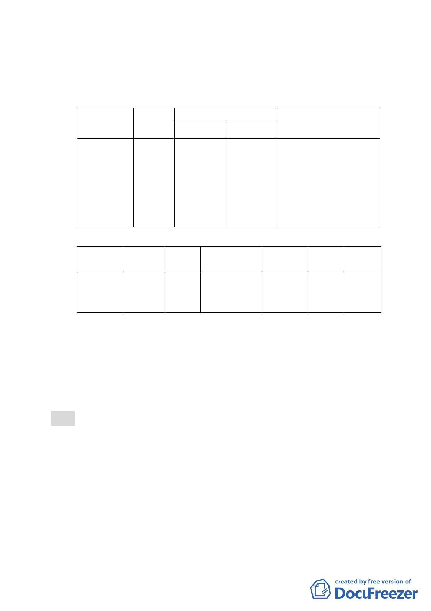

等6 筆土地均屬保護區，其中139 地號土地屬私有，其
餘138-2、138-6、140-1、140-2、140-3 地號等5 筆土
地均屬市有土地，其管理機關為臺北市殯葬管理處。
（三） 變更主要計畫內容：
位置
面積
變更內容
原計畫
新計畫
變更理由
大安區辛亥
段五小段
138-2 、
138-6、139、
140-1 、
140-2、140-3
地號土地
0.28ha
保護區
殯儀館用地
為提供第二殯儀館館區
用地治喪服務使用空間
優質化，以滿足本市治喪
服務需求。
（四） 實施進度與經費：
公共設施
土地取
面積（㎡）
種類
得方式
開闢經費(元)
殯儀館
用地
206㎡
徵購
5,971,016
主辦單位
臺北市殯
葬管理處
預定完
成期限
民國
102年
12月
經費
來源
101年
預算
四 、本案係市府 100 年 10 月 26 日府都規字第 10036775403
號函送到會，100 年 10 月 27 日起公開展覽 30 天。
五、公民或團體所提意見：1 件。(詳後附綜理表)
六、辦理單位：臺北市政府(民政局)。
七、法令依據：都市計畫法第 27 條第 1 項第 4 款。
決議：
一、本案除以下各點文字應作補述與修正外，其餘依市府所送
計畫書、本次會議簡報內容與回應資料修正通過：
（一）計畫緣起內請加強說明欲變更之範圍市府已有整建實施計
畫並編列年度預算，屬市府核定之重大建設計畫，符合都
市計畫法第 27 條第 1 項第 4 款規定。
（二）計畫書第 3 頁實施進度與經費表格文字-土地取得方式「徵
購」請修正為「徵收」。
- 11 -